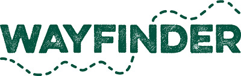
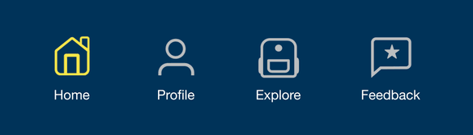
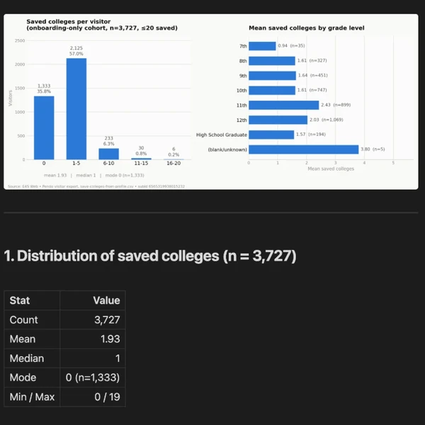
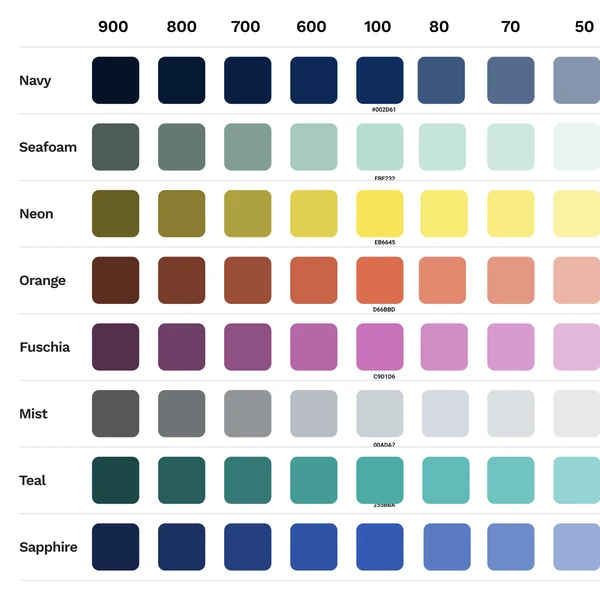

You need a designer who listens to educators and ships for students.
Hi, I'm Rahul.
At a glance
- K-12 UX, 5 years
- WCAG 2.1 · CPACC in progress
- M.S. Learning Design & Technology
I own K-12 features end to end, from watching students in classrooms to A/B-tested handoff, on a college and career readiness product.
Chiron — building a personalized, Socratic tutor out of an LLM
A Claude skill that turns a conversation into a short course: modules, simulations it writes on the spot, and knowledge checks that reach back to earlier ones. It's my testbed for designing AI-enabled learning: deciding where the model leads, where the learner does, and how to keep it honest.
View on GitHub (opens in new tab)Encourage — asking students for 2x the data without dropping completion
Encourage serves 150,000+ high school students on school-issued devices and unreliable wifi. When the onboarding survey had to double in length, I used chunking and micro-interactions to keep it from feeling like a slog. The redesign started in classrooms: watching where students stalled is what reordered the whole flow.
Shipping Back to School 2026
Encourage for Educators — designing for the counselor's workflow
The counselor-facing side of Encourage: rosters, student status tracking, and the tools guidance staff use daily to support hundreds of students at once. It's the closest analog to Wayfinder's educator side: designing for adults who guide many students through the same journey, each at their own pace.
Shipped
What teams pull me in for, whatever the project


